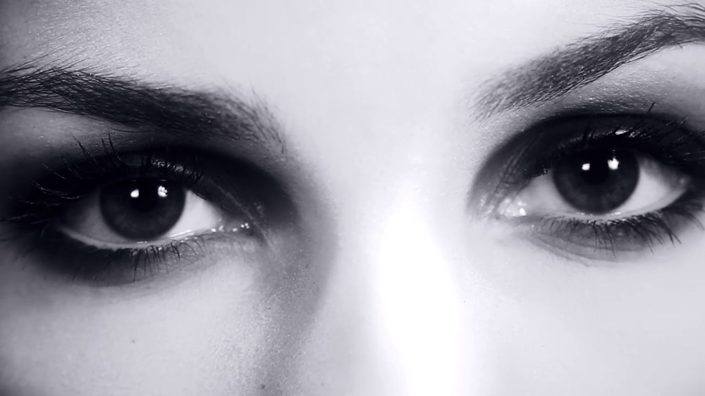
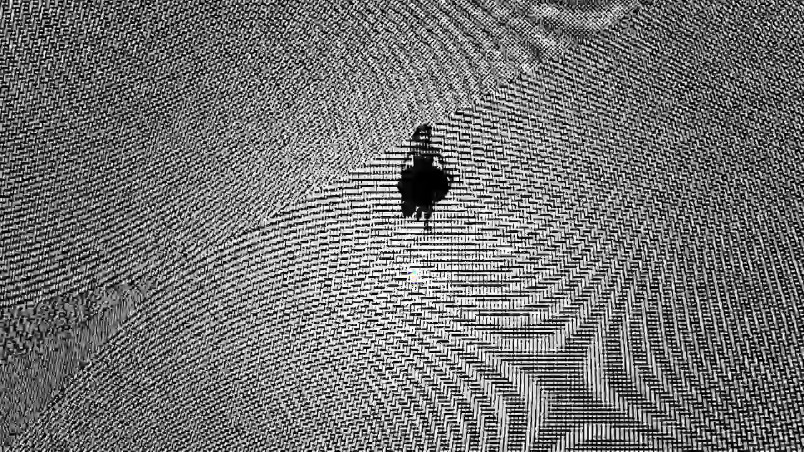
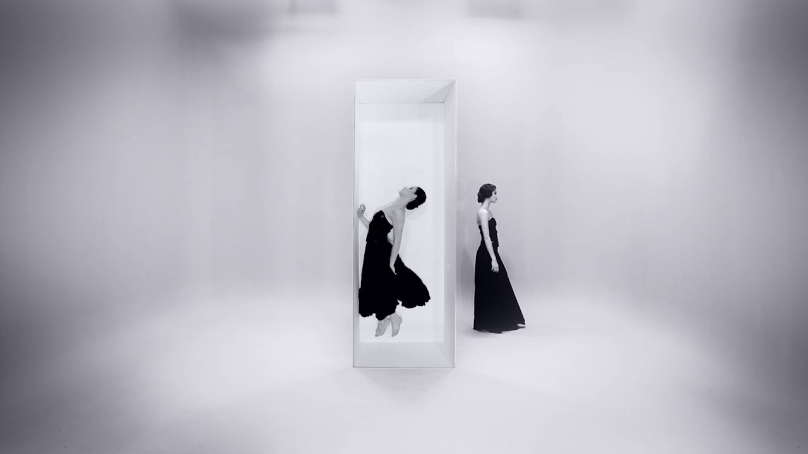
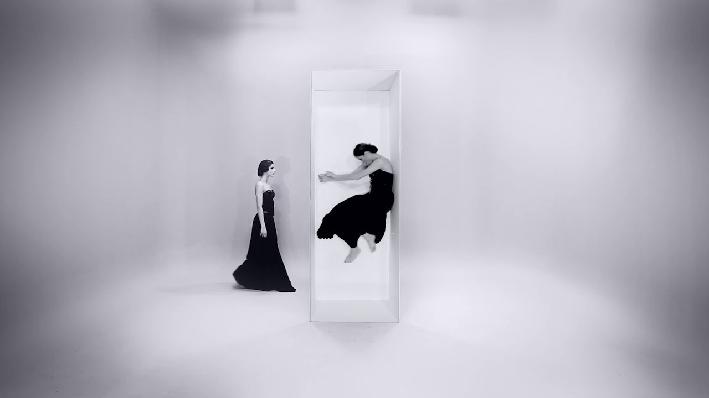
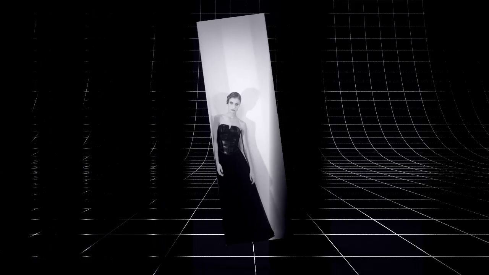
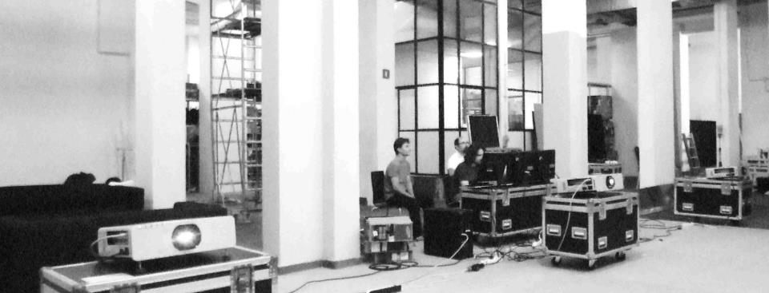
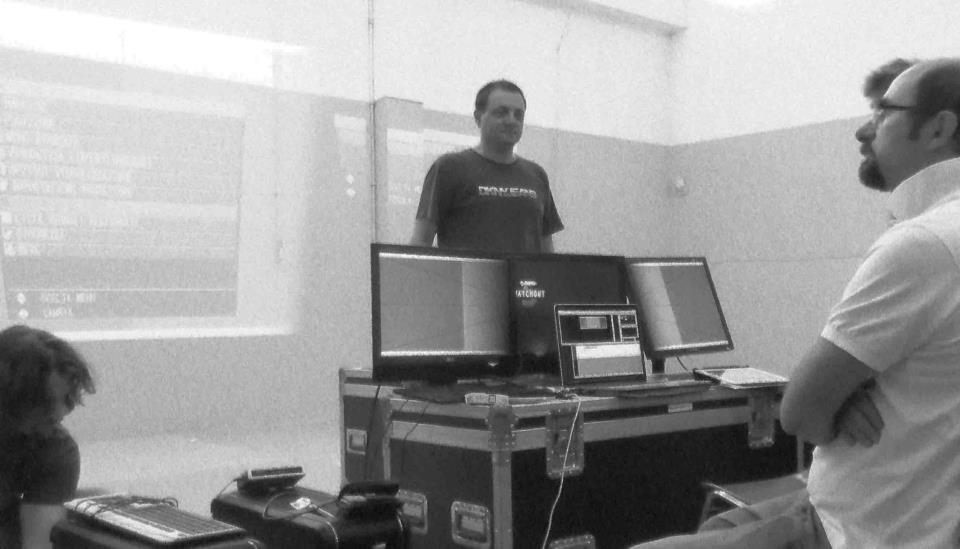
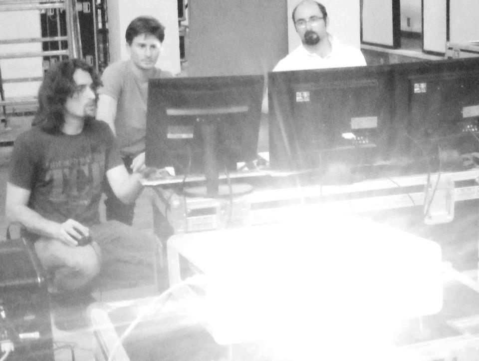

01_BALANCE by art director Cristian Taraborrelli is a FORMAT designed for events that combines dance and choreography with the dynamics of the image. The great potential of this format lies in its flexibility and applicability across diverse contexts: conventions, openings, media events, gala dinners, road shows.
01_BALANCE is part of the Balance® system: a multifaceted project, a new and original interpretation of the scenic apparatus in which bodies and objects lose their gravity. “Frames in the balance between space and time.”
01_BALANCE dell’art director Cristian Taraborrelli, è un FORMAT pensato per gli eventi che coniuga la danza e la coreografia con la dinamica dell’immagine. Le grandi potenzialità di questo FORMAT sono nella flessibilità e applicabilità in ambiti diversi: convention, opening, media events, gala dinner, road show.
01_BALANCE è parte del sistema Balance®: un progetto poliedrico, una nuova, originale interpretazione dell’impianto scenico nella quale i corpi e gli oggetti perdono di gravità. «Frames in the balance between space and time.»
01_BALANCE du directeur artistique Cristian Taraborrelli est un FORMAT conçu pour les événements qui conjugue danse et chorégraphie avec la dynamique de l’image. Le grand potentiel de ce format réside dans sa flexibilité et son applicabilité dans des contextes divers : conventions, inaugurations, media events, dîners de gala, road shows.
01_BALANCE fait partie du système Balance® : un projet multiforme, une nouvelle interprétation originale de l’appareil scénique dans laquelle les corps et les objets perdent leur gravité. «Frames in the balance between space and time.»
Galleria






Video
Backstage



Tags